lorenz_partial_25d_additive_mse_p30__lc_sweepProject: Lorenz_INDpartial_N25_D1_NormTrue_T3__JacobianODE
Launched: 2026-04-15T10:36:39Z
Completed: 2026-04-15T14:40:12Z
Outcome: complete_clean
Git: latent-JacobianODE @ c35dd72
Expected runs: 9
lorenz_partial_25d_additive_mse_p30Description
Partial-obs Lorenz: x-coordinate only (observed_indices=[0]), n_delays=25, delay_spacing=1. Encoder input 25-D, z_dyn 3-D, z_null 22-D with kl_null_weight=0. Additive coupling encoder, joint training, reconstruction_mode='most_recent'. Plain MSE loss. prediction_steps=30, seq_length=45. obs_noise_scale=0.
Hypothesis
A longer prediction horizon sharpens the forward-rollout training signal, which in partial-obs has been the main limiter of spectrum recovery. Expecting tighter λ_min (less under-contracted than the 10-step baseline) and improved trajectory_r2.
Success criteria
Swept axes (1): training.lightning.loop_closure_weight
Chosen run (by best_traj_loss): mrlaz23p — traj_loss=0.00004, MASE=0.1526, R²=0.9999, LC loss=0.229, epoch=157.0
Swept-axis values at chosen run: training.lightning.loop_closure_weight=0
Runs analyzed: 9 (expected 9)
| run_idx | run_id | training.lightning.loop_closure_weight |
best_traj_loss | best_MASE | R² | LC loss | epoch |
|---|---|---|---|---|---|---|---|
| 0 | mrlaz23p |
0 | 0.00004 | 0.1526 | 0.9999 | 0.229 | 157.0 |
| 3 | mvgj4an1 |
1.0e-04 | 0.00005 | 0.1706 | 0.9998 | 0.046 | 150.0 |
| 2 | 14bedd98 |
1.0e-05 | 0.00012 | 0.2423 | 0.9996 | 0.248 | 95.0 |
| 4 | 8limhocw |
0.001 | 0.00017 | 0.2840 | 0.9995 | 0.010 | 105.0 |
| 5 | vnaouu4h |
0.01 | 0.00050 | 0.4528 | 0.9984 | 0.002 | 106.0 |
| 6 | 2kjpo3wj |
0.1 | 0.00062 | 0.4753 | 0.9981 | 0.000 | 114.0 |
| 7 | qfgsuu0y |
1 | 0.00090 | 0.5637 | 0.9972 | 0.000 | 109.0 |
| 8 | zrdflw7j |
10 | 0.00108 | 0.8213 | 0.9966 | 0.000 | 107.0 |
| 1 | 1sd1oshk |
1.0e-06 | 0.00268 | 1.0457 | 0.9917 | 0.313 | 23.0 |
| Criterion | Verdict | Note |
|---|---|---|
| Best run's leading Lyapunov exponent > 0 | Unknown | |
| Best run's predicted Lyapunov spectrum within ~40% of empirical | Unknown | |
| Noticeable improvement in λ_min recovery vs p10 partial_25d_mse | Unknown |
Automated verdicts use simple numeric-threshold parsing and may mis-classify qualitative criteria. The Discussion section below takes precedence.
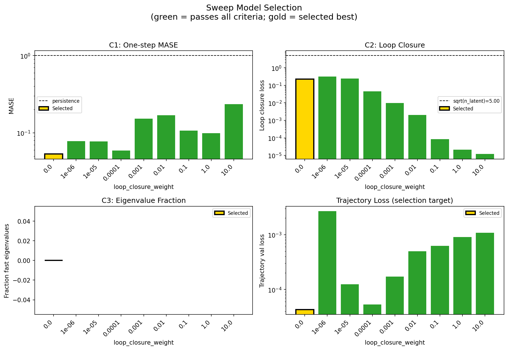
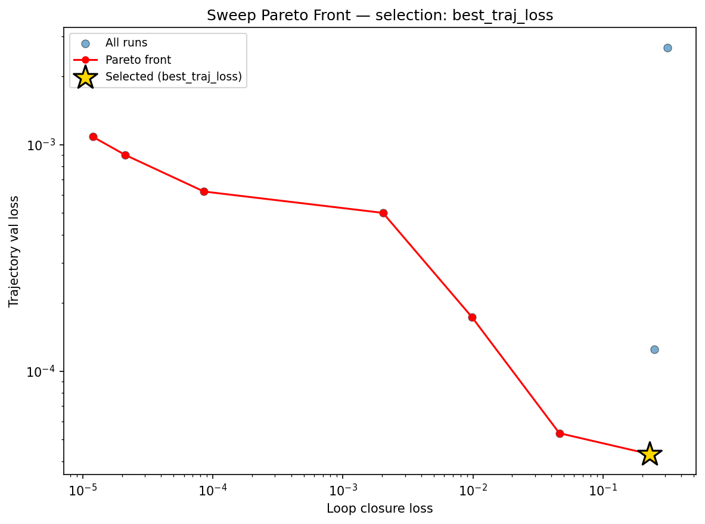
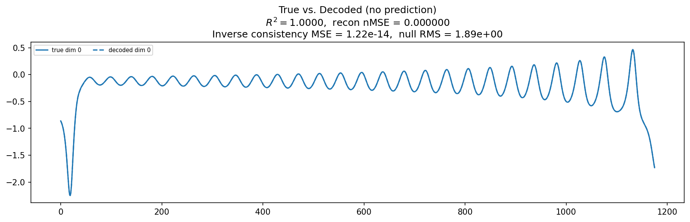
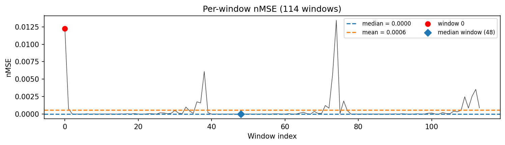
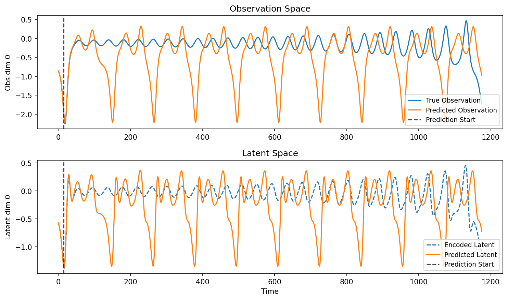
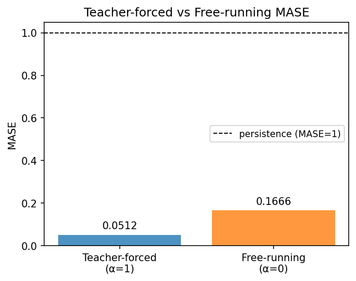
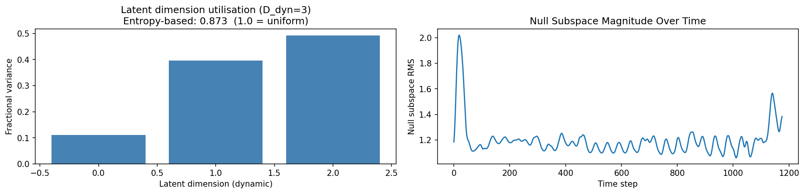
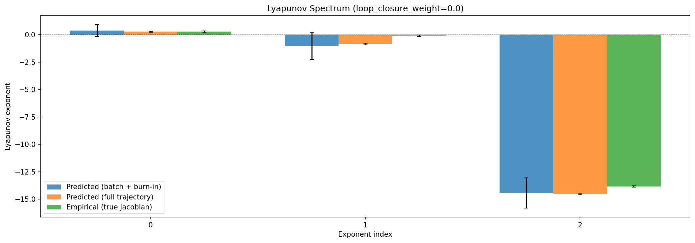
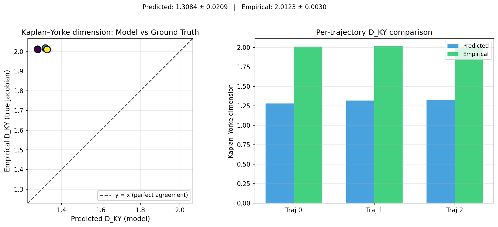
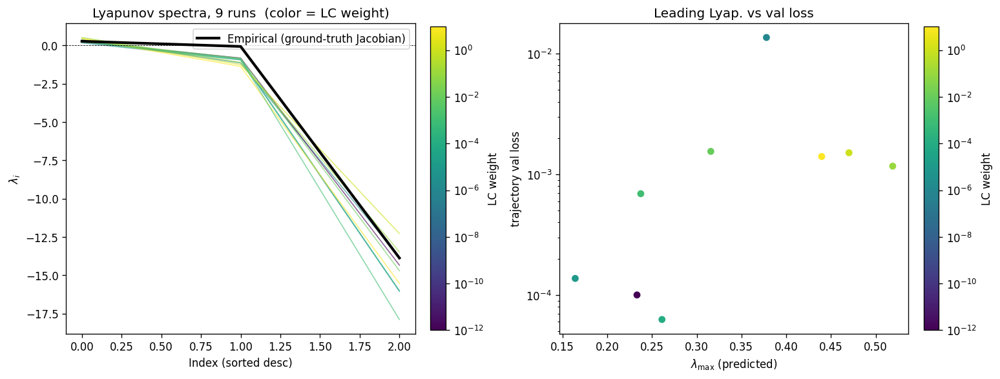
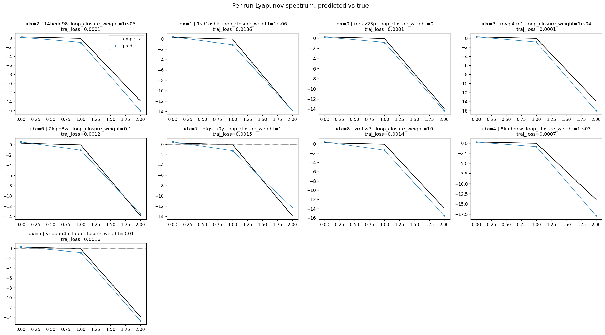
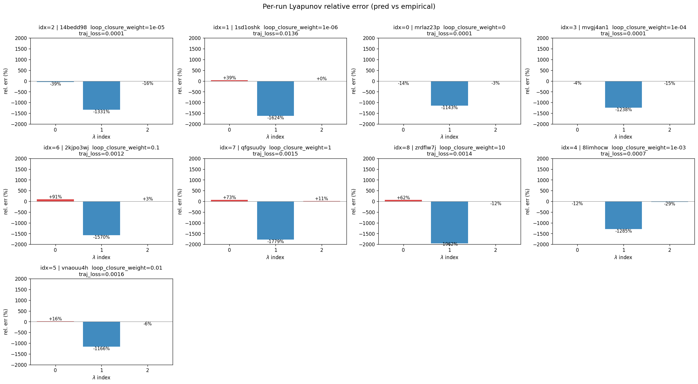
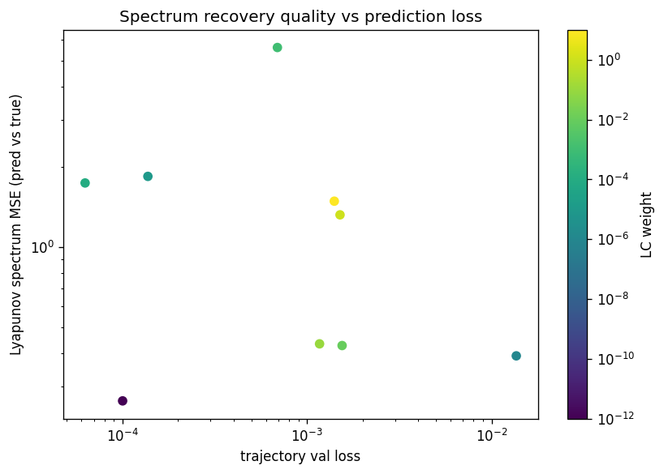
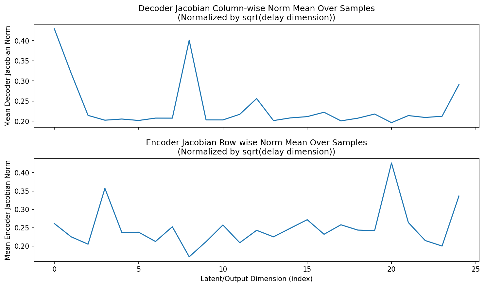
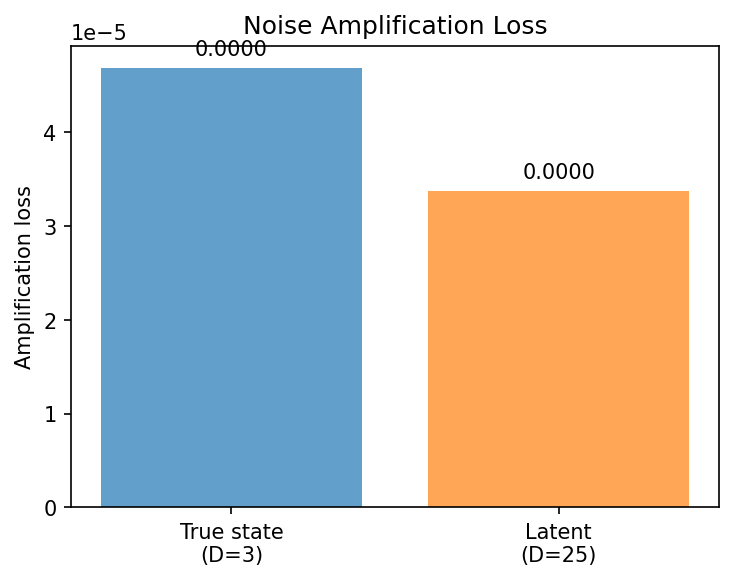
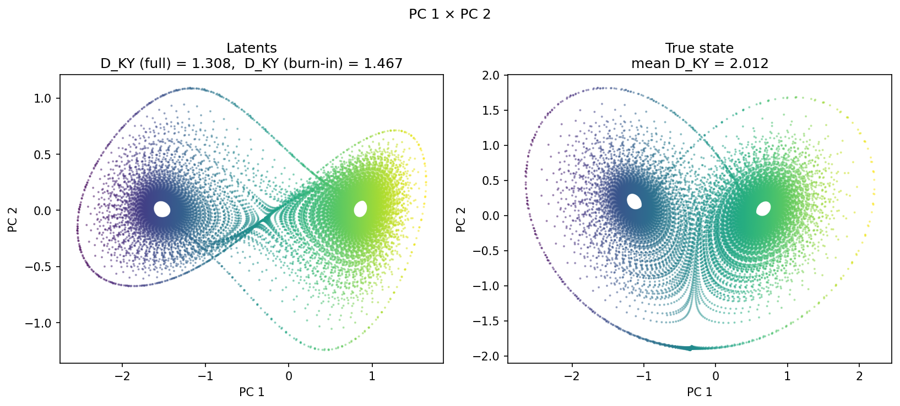
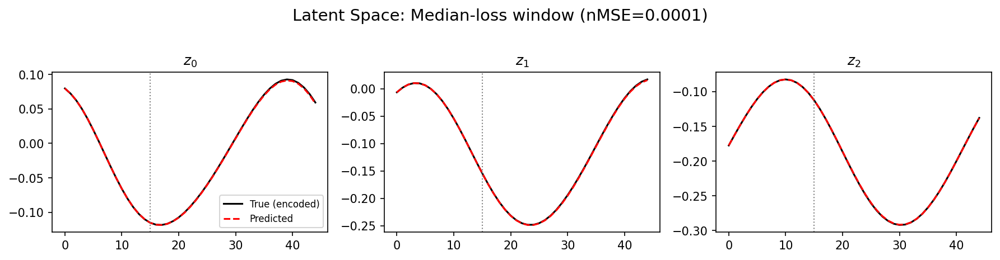
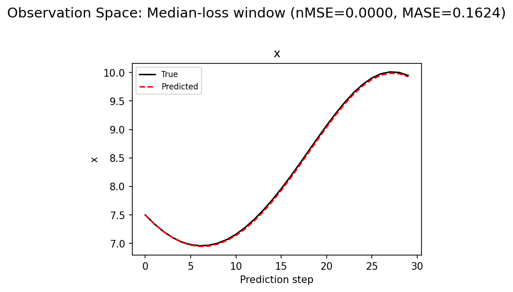
(to be written)
run_analytics stdoutrun_analyticsNo run_id provided — selecting best run from group 'lorenz_partial_25d_additive_mse_p30__lc_sweep' ...
Found 9 total runs in JacobianODE/Lorenz_INDpartial_N25_D1_NormTrue_T3__JacobianODE (group=lorenz_partial_25d_additive_mse_p30__lc_sweep)
All runs (state, loop_closure_weight, tangent_entropy_weight, kl_dyn_weight):
14bedd98: state=finished, lc=1e-05, te=0.0, kl_dyn=0.0
1sd1oshk: state=finished, lc=1e-06, te=0.0, kl_dyn=0.0
mrlaz23p: state=finished, lc=0.0, te=0.0, kl_dyn=0.0
mvgj4an1: state=finished, lc=0.0001, te=0.0, kl_dyn=0.0
2kjpo3wj: state=finished, lc=0.1, te=0.0, kl_dyn=0.0
qfgsuu0y: state=finished, lc=1.0, te=0.0, kl_dyn=0.0
zrdflw7j: state=finished, lc=10.0, te=0.0, kl_dyn=0.0
8limhocw: state=finished, lc=0.001, te=0.0, kl_dyn=0.0
vnaouu4h: state=finished, lc=0.01, te=0.0, kl_dyn=0.0
slurm_timeout_min not found in any run config — falling back to 180 min
Including 14bedd98 (lc=1e-05): use_all_runs=True (state=finished)
Including 1sd1oshk (lc=1e-06): use_all_runs=True (state=finished)
Including mrlaz23p (lc=0.0): use_all_runs=True (state=finished)
Including mvgj4an1 (lc=0.0001): use_all_runs=True (state=finished)
Including 2kjpo3wj (lc=0.1): use_all_runs=True (state=finished)
Including qfgsuu0y (lc=1.0): use_all_runs=True (state=finished)
Including zrdflw7j (lc=10.0): use_all_runs=True (state=finished)
Including 8limhocw (lc=0.001): use_all_runs=True (state=finished)
Including vnaouu4h (lc=0.01): use_all_runs=True (state=finished)
Found 9 effectively-done sweep runs:
loop_closure_weight=0.0, tangent_entropy_weight=0.0, kl_dyn_weight=0.0 -> run_id=mrlaz23p
loop_closure_weight=1e-06, tangent_entropy_weight=0.0, kl_dyn_weight=0.0 -> run_id=1sd1oshk
loop_closure_weight=1e-05, tangent_entropy_weight=0.0, kl_dyn_weight=0.0 -> run_id=14bedd98
loop_closure_weight=0.0001, tangent_entropy_weight=0.0, kl_dyn_weight=0.0 -> run_id=mvgj4an1
loop_closure_weight=0.001, tangent_entropy_weight=0.0, kl_dyn_weight=0.0 -> run_id=8limhocw
loop_closure_weight=0.01, tangent_entropy_weight=0.0, kl_dyn_weight=0.0 -> run_id=vnaouu4h
loop_closure_weight=0.1, tangent_entropy_weight=0.0, kl_dyn_weight=0.0 -> run_id=2kjpo3wj
loop_closure_weight=1.0, tangent_entropy_weight=0.0, kl_dyn_weight=0.0 -> run_id=qfgsuu0y
loop_closure_weight=10.0, tangent_entropy_weight=0.0, kl_dyn_weight=0.0 -> run_id=zrdflw7j
n_dims=25, n_latent=25, n_dyn=3, dt=0.0150
run=mrlaz23p: DiagnosticMetrics(one_step_mase=0.05323868617415428, loop_closure_loss=0.22897323966026306, fast_eigenvalue_fraction=0.0, trajectory_val_loss=4.298223211662844e-05) (from cache, n_batches=100)
run=1sd1oshk: DiagnosticMetrics(one_step_mase=0.07847961038351059, loop_closure_loss=0.3126348555088043, fast_eigenvalue_fraction=0.0, trajectory_val_loss=0.002675914205610752) (from cache, n_batches=100)
run=14bedd98: DiagnosticMetrics(one_step_mase=0.07729717344045639, loop_closure_loss=0.24837779998779297, fast_eigenvalue_fraction=0.0, trajectory_val_loss=0.00012468814384192228) (from cache, n_batches=100)
run=mvgj4an1: DiagnosticMetrics(one_step_mase=0.05887477099895477, loop_closure_loss=0.04615406692028046, fast_eigenvalue_fraction=0.0, trajectory_val_loss=5.3177991503616795e-05) (from cache, n_batches=100)
run=8limhocw: DiagnosticMetrics(one_step_mase=0.15273365378379822, loop_closure_loss=0.009837581776082516, fast_eigenvalue_fraction=0.0, trajectory_val_loss=0.0001729045616229996) (from cache, n_batches=100)
run=vnaouu4h: DiagnosticMetrics(one_step_mase=0.16946785151958466, loop_closure_loss=0.0020310941617935896, fast_eigenvalue_fraction=0.0, trajectory_val_loss=0.0004997099749743938) (from cache, n_batches=100)
run=2kjpo3wj: DiagnosticMetrics(one_step_mase=0.10682576894760132, loop_closure_loss=8.54705722304061e-05, fast_eigenvalue_fraction=0.0, trajectory_val_loss=0.0006208796985447407) (from cache, n_batches=100)
run=qfgsuu0y: DiagnosticMetrics(one_step_mase=0.09887446463108063, loop_closure_loss=2.1261592337395996e-05, fast_eigenvalue_fraction=0.0, trajectory_val_loss=0.0008999327546916902) (from cache, n_batches=100)
run=zrdflw7j: DiagnosticMetrics(one_step_mase=0.2357090413570404, loop_closure_loss=1.1918265045096632e-05, fast_eigenvalue_fraction=0.0, trajectory_val_loss=0.0010838722810149193) (from cache, n_batches=100)
Ranking method: best_traj_loss
Best run ID: mrlaz23p
Best loop_closure_weight: 0.0
Best tangent_entropy_weight: 0.0
Best kl_dyn_weight: 0.0
Best traj loss: 0.000043
Criteria applied: ['C1', 'C2', 'C3']
Surviving: 9 / 9
Auto-selected run_id: mrlaz23p
======================================================================
PARETO FRONTIER RUNS (7 runs)
======================================================================
Run ID LC Loss Traj Val Loss
------------ -------------- --------------
zrdflw7j 0.000012 0.001084
qfgsuu0y 0.000021 0.000900
2kjpo3wj 0.000085 0.000621
vnaouu4h 0.002031 0.000500
8limhocw 0.009838 0.000173
mvgj4an1 0.046154 0.000053
mrlaz23p 0.228973 0.000043 <-- selected
======================================================================
RANKING METHOD COMPARISON (over 9 survivors)
======================================================================
Method Run ID LC Loss Traj Val Loss
---------------------- ------------ -------------- --------------
best_traj_loss mrlaz23p 0.228973 0.000043 <-- active
pareto_knee vnaouu4h 0.002031 0.000500
geo_rank mrlaz23p 0.228973 0.000043
minimax_rank 8limhocw 0.009838 0.000173
geo_log_score mrlaz23p 0.228973 0.000043
minimax_log_score vnaouu4h 0.002031 0.000500
======================================================================
Loading run mrlaz23p from JacobianODE/Lorenz_INDpartial_N25_D1_NormTrue_T3__JacobianODE ...
Train dataset shape: torch.Size([24882, 45, 25])
Validation dataset shape: torch.Size([7917, 45, 25])
Test dataset shape: torch.Size([3393, 45, 25])
Train trajectories dataset shape: torch.Size([22, 1176, 25])
Validation trajectories dataset shape: torch.Size([7, 1176, 25])
Test trajectories dataset shape: torch.Size([3, 1176, 25])
Loading checkpoint epoch=157-step=31600.ckpt...
Computing reconstruction ...
Computing MASE ...
Teacher-forced MASE: 0.0512
Free-running MASE: 0.1666
Computing latent utilization ...
Entropy-based utilization: 0.873
Null subspace mean RMS: 1.203049e+00
Computing Lyapunov exponents ...
Computing full-trajectory Lyapunov (3 test trajs, T=1176) ...
Predicted Lyapunov exponents (batch+burn-in, 128 windowed trajs):
λ_1 = +0.3549 ± 0.5505
λ_2 = -1.0294 ± 1.2382
λ_3 = -14.4248 ± 1.3679
Predicted Lyapunov exponents (full-length, 3 test trajs):
λ_1 = +0.2642 ± 0.0435
λ_2 = -0.8530 ± 0.0764
λ_3 = -14.5469 ± 0.0349
Empirical Lyapunov exponents (mean ± std):
λ_1 = +0.2716 ± 0.0605
λ_2 = -0.1016 ± 0.0797
λ_3 = -13.8370 ± 0.0514
Mean KY dim (predicted): 1.308 ± 0.021
Mean KY dim (empirical): 2.012 ± 0.003
Mean KY dim (burn-in): 1.467 ± 0.602
Computing prediction windows ...
Windows: 114 — nMSE min=0.0000, median=0.0000, mean=0.0006, max=0.0134
Computing long trajectory prediction ...
Computing encoder/decoder Jacobians ...
encoder_jacobian: (128, 25, 25)
decoder_jacobian: (128, 25, 25)
Computing amplification loss ...
Amplification loss — True state: 0.000047
Amplification loss — Latent: 0.000034